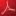

Marc Najork's home page
Welcome to my personal home page. I am a
Distinguished Research Scientist at
Google DeepMind,
working on challenges related to Generative AI. Previously, I was a Senior Director of Research at
Google Research,
managing a team of (at peak) 69 researchers, working on a broad range of Information Retrieval
problems.
From October 2001 to March 2014, I was a researcher at the
(now defunct)
Microsoft Research Silicon Valley
lab. In that role, I worked on various aspects of social search;
link-based ranking algorithms
for web search results; the
Scalable Hyperlink Store,
a distributed in-memory store for web graphs; heuristics for detecting
spam web pages;
PageTurner,
a large-scale study of the evolution of web pages; and
Boxwood,
a distributed B-Tree system.
From October 1993 to September 2001, I worked at Digital Equipment's (later Compaq's)
Systems Research Center.
Projects at SRC included Mercator,
a high-performance distributed web crawler;
JCAT,
a web-based algorithm animation system; and
Obliq-3D,
a scripting system for 3D animations.
I received a Ph.D. in Computer Science from
the University of Illinois at
Urbana-Champaign for my work on Cube,
a 3D visual programming language.
I am an AAAS Fellow,
an ACM Fellow,
an IEEE Fellow,
an AAIA Fellow
and a member of the SIGIR Academy.
I am currently serving on the
ACM Publications Board
and as co-chair of the
SIGIR Academy Selection Committee.
In the past, I served as an associate editor of
the ACM Transactions on the Web
from 2005 until 2011 and as editor-in-chief from 2011 until 2015, as
co-chair of the news section of the
Communications of the ACM
from 2008 until 2014, conference chair of
WSDM 2008,
and program co-chair of
WWW 2004,
WWW 2021 and
WSDM 2025.
You can visit me
on LinkedIn
or FaceBook, and you can
download my CV.
Papers
Here is a fairly complete list of the papers that I have written over the
years (you can also
try Google
Scholar or DBLP):
-

Rongzhi Zhang, Jiaming Shen, Tianqi Liu, Jialu Liu, Michael Bendersky, Marc Najork, Chao Zhang.
Knowledge Distillation with Perturbed Loss: From a Vanilla Teacher to a Proxy Teacher.
30th ACM SIGKDD Conference on Knowledge Discovery and Data Mining (KDD), 2024.
-
Spurthi Amba Hombaiah, Tao Chen, Mingyang Zhang, Michael Bendersky, Marc Najork, Matt Colen, Sergey Levi, Vladimir Ofitserov, Tanvir Amin.
Creator Context for Tweet Recommendation.
2023 Conference on Empirical Methods in Natural Language Processing: Industry Track (EMNLP), 2023.
-
Sanket Mehta, Jai Gupta, Yi Tay, Mostafa Dehghani, Vinh Tran, Jinfeng Rao, Marc Najork, Emma Strubell, Donald Metzler.
DSI++: Updating Transformer Memory with New Documents.
2023 Conference on Empirical Methods in Natural Language Processing (EMNLP), 2023.
-
Aijun Bai, Rolf Jagerman, Zhen Qin, Le Yan, Pratyush Kar, Bing-Rong Lin, Xuanhui Wang, Michael Bendersky, Marc Najork.
Regression Compatible Listwise Objectives for Calibrated Ranking with Binary Relevance.
32nd ACM International Conference on Information and Knowledge Management (CIKM), 2023.
-
Yunan Zhang, Le Yan, Zhen Qin, Honglei Zhuang, Jiaming Shen, Xuanhui Wang, Michael Bendersky, Marc Najork.
Towards Disentangling Relevance and Bias in Unbiased Learning to Rank.
2023 ACM SIGKDD International Conference on Knowledge Discovery and Data Mining (KDD), 2023.
-
Karam Samel, Cheng Li, Weize Kong, Tao Chen, Mingyang Zhang, Shaleen Gupta, Swaraj Khadanga, Wensong Xu, Xingyu Wang, Kashyap Kolipaka, Michael Bendersky, Marc Najork.
End-to-End Query Term Weighting.
2023 ACM SIGKDD International Conference on Knowledge Discovery and Data Mining (KDD), 2023.
-
Aditi Chaudhary, Karthik Raman, Krishna Srinivasan, Kazuma Hashimoto, Mike Bendersky, Marc Najork.
Exploring the Viability of Synthetic Query Generation for Relevance Prediction.
2023 SIGIR Workshop On eCommerce (SIGIReCom), 2023.
-
Marc Najork.
Generative Information Retrieval.
Keynote abstract, 46th International ACM SIGIR Conference on Research and Development in Information Retrieval (SIGIR), 2023.
-
Rongzhi Zhang, Jiaming Shen, Tianqi Liu, Jialu Liu, Michael Bendersky, Marc Najork, Chao Zhang.
Do Not Blindly Imitate the Teacher: Using Perturbed Loss for Knowledge Distillation.
arXiv preprint 2305.05010, 2023.
-
Jiaming Shen, Jialu Liu, Dan Finnie, Negar Rahmati, Michael Bendersky, Marc Najork.
"Why is this misleading?": Detecting News Headline Hallucinations with Explanations.
ACM Web Conference 2023 (WWW), 2023.
-
Cheng Li, Yaping Qi, Hayk Zakaryan, Mingyang Zhang, Michael Bendersky, Yonghua Wu, Marc Najork.
Job Type Extraction for Service Businesses.
ACM Web Conference 2023 (WWW), 2023.
-
Beliz Gunel, Sandeep Tata, Marc Najork.
STRUM: Extractive Aspect-Based Contrastive Summarization.
ACM Web Conference 2023 (WWW), 2023.
-
Rolf Jagerman, Xuanhui Wang, Honglei Zhuang, Zhen Qin, Michael Bendersky, Marc Najork.
Rax: Composable Learning-to-Rank using JAX.
28th ACM SIGKDD Conference on Knowledge Discovery and Data Mining (KDD), 2022.
-
Le Yan, Zhen Qin, Xuanhui Wang, Michael Bendersky, Marc Najork.
Scale Calibration of Deep Ranking Models.
28th ACM SIGKDD Conference on Knowledge Discovery and Data Mining (KDD), 2022.
-
Rolf Jagerman, Zhen Qin, Xuanhui Wang, Michael Bendersky, Marc Najork.
On Optimizing Top-K Metrics for Neural Ranking Models.
45th International ACM SIGIR Conference on Research and Development in Information Retrieval (SIGIR), 2022.
-
Le Yan, Zhen Qin, Honglei Zhuang, Xuanhui Wang, Mike Bendersky, Marc Najork.
Revisiting Two-tower Models for Unbiased Learning to Rank.
45th International ACM SIGIR Conference on Research and Development in Information Retrieval (SIGIR), 2022.
-
Tao Chen, Mingyang Zhang, Jing Lu, Michael Bendersky, Marc Najork.
Out-of-Domain Semantics to the Rescue! Zero-Shot Hybrid Retrieval Models.
44th European Conference on Information Retrieval (ECIR), 2022.
-
Omar Alonso, Stefano Marchesin, Marc Najork, Gianmaria Silvello.
Report on the 2nd International Conference on Design of Experimental
Search & Information REtrieval Systems (DESIRES 2021).
ACM SIGIR Forum 55(2) article 14, 2021.
-
Nan Wang, Zhen Qin, Le Yan, Honglei Zhuang, Xuanhui Wang, Michael Bendersky, Marc Najork.
Rank4Class: A Ranking Formulation for Multiclass Classification.
arXiv preprint 2112.09727, 2021.
-
Chen Qu, Weize Kong, Liu Yang, Mingyang Zhang, Michael Bendersky, Marc Najork.
Natural Language Understanding with Privacy-Preserving BERT.
30th ACM International Conference on Information and Knowledge Management (CIKM), 2021.
-
Zhen Qin, Le Yan, Yi Tay, Honglei Zhuang, Xuanhui Wang, Michael Bendersky, Marc Najork.
Improving Neural Ranking via Lossless Knowledge Distillation.
arXiv preprint 2109.15285, 2021.
-
Spurthi Amba Hombaiah, Tao Chen, Mingyang Zhang, Michael Bendersky, Marc Najork.
Dynamic Language Models for Continuously Evolving Content.
27th ACM SIGKDD Conference on Knowledge Discovery and Data Mining (KDD), 2021.
-
Zhen Qin, Honglei Zhuang, Rolf Jagerman, Xinyu Qian, Po Hu, Chary Chen, Xuanhui Wang, Michael Bendersky, Marc Najork.
Bootstrapping Recommendations at Chrome Web Store.
27th ACM SIGKDD Conference on Knowledge Discovery and Data Mining (KDD), 2021.
-
Nicholas Monath, Avinava Dubey, Guru Guruganesh, Manzil Zaheer, Amr Ahmed, Andrew McCallum, Gokhan Mergen, Marc Najork, Mert Terzihan, Bryon Tjanaka, Yuan Wang, Yuchen Wu.
Scalable Hierarchical Agglomerative Clustering.
27th ACM SIGKDD Conference on Knowledge Discovery and Data Mining (KDD), 2021.
-
Beliz Gunel, Navneet Potti, Sandeep Tata, James B. Wendt, Marc Najork, Jing Xie.
Data-Efficient Information Extraction from Form-Like Documents.
Document Intelligence Workshop @ KDD 2021 (DI 2021), 2021.
-
Donald Metzler, Yi Tay, Dara Bahri, Marc Najork.
Rethinking Search: Making Domain Experts out of Dilettantes.
ACM SIGIR Forum 55(1) article 13, 2021.
-
Michael Bendersky, Xuanhui Wang, Marc Najork and Donald Metzler.
Search and Discovery in Personal Email Collections.
Foundations and Trends in Information Retrieval 15(1):1-133, 2021.
-
Krishna Srinivasan, Karthik Raman, Jiecao Chen, Michael Bendersky, Marc Najork.
WIT: Wikipedia-based Image Text Dataset for Multimodal Multilingual Machine Learning.
44th International ACM SIGIR Conference on Research and Development in Information Retrieval (SIGIR), 2021.
-
Honglei Zhuang, Zhen Qin, Shuguang Han, Xuanhui Wang, Michael Bendersky, Marc Najork.
Ensemble Distillation for BERT-Based Ranking Models.
7th ACM SIGIR International Conference on the Theory of Information Retrieval (ICTIR), 2021.
-
Zhen Qin, Le Yan, Honglei Zhuang, Yi Tay, Rama Kumar Pasumarthi, Xuanhui Wang, Michael Bendersky, Marc Najork.
Are Neural Rankers still Outperformed by Gradient Boosted Decision Trees?
9th International Conference on Learning Representations (ICLR), 2021.
-
Rolf Jagerman, Weize Kong, Rama Kumar Pasumarthi, Zhen Qin, Michael Bendersky and Marc Najork.
Improving Cloud Storage Search with User Activity.
14th ACM International Conference on Web Search and Data Mining (WSDM), 2021.
-
Sandeep Tata, Navneet Potti, James Wendt, Lauro Beltrão Costa, Marc Najork and Beliz Gunel.
Glean: Structured Extractions from Templatic Documents.
Proceedings of the VLDB Endowment 14(6):997-1005, 2021.
-
Jiecao Chen, Liu Yang, Karthik Raman, Michael Bendersky, Jung-Jung Yeh, Yun Zhou, Marc Najork, Danyang Cai and Ehsan Emadzadeh.
DiPair: Fast and Accurate Distillation for Trillion-Scale Text Matching and Pair Modeling.
2020 Conference on Empirical Methods in Natural Language Processing: Findings (EMNLP Findings), 2020.
-
Liu Yang, Mingyang Zhang, Cheng Li, Michael Bendersky and Marc Najork.
Beyond 512 Tokens: Siamese Multi-depth Transformer-based Hierarchical Encoder for Long-Form Document Matching.
29th ACM International Conference on Information and Knowledge Management (CIKM), 2020.
-
Saar Kuzi, Mingyang Zhang, Cheng Li, Michael Bendersky, Marc Najork.
Leveraging Semantic and Lexical Matching to Improve the Recall of Document Retrieval Systems: A Hybrid Approach.
arXiv preprint 2010.01195, 2020.
-
Rama Kumar Pasumarthi, Honglei Zhuang, Xuanhui Wang, Michael Bendersky and Marc Najork.
Permutation Equivariant Document Interaction Network for Neural Learning-to-Rank.
6th ACM SIGIR International Conference on the Theory of Information Retrieval (ICTIR), 2020.
-
Weize Kong, Michael Bendersky, Marc Najork, Brandon Vargo and Mike Colagrosso.
Learning to Cluster Documents into Workspaces Using Large Scale Activity Logs.
26th ACM SIGKDD International Conference on Knowledge Discovery and Data Mining (KDD), 2020.
-
Honglei Zhuang, Xuanhui Wang, Michael Bendersky and Marc Najork.
Feature Transformation for Neural Ranking Models.
43rd International ACM SIGIR Conference on Research and Development in Information Retrieval (SIGIR), 2020.
-
Bodhisattwa Prasad Majumder, Navneet Potti, Sandeep Tata, James Bradley Wendt, Qi Zhao and Marc Najork.
Representation Learning for Information Extraction from Form-like Documents.
58th Annual Meeting of the Association for Computational Linguistics (ACL), 2020.
-
Abbas Kazerouni, Qi Zhao, Jing Xie, Sandeep Tata, Marc Najork.
Active Learning for Skewed Data Sets.
arXiv preprint 2005.11442, 2020.
-
Shuguang Han, Xuanhui Wang, Mike Bendersky, Marc Najork.
Learning-to-Rank with BERT in TF-Ranking.
arXiv preprint 2004.08476, 2020.
-
Shuguang Han, Michael Bendersky, Przemek Gajda, Sergey Novikov, Marc Najork, Bernhard Brodowsky and Alexandrin Popescul.
Adversarial Bandits Policy for Crawling Commercial Web Content.
2020 World Wide Web Conference (WWW), 2020.
-
Sebastian Bruch, Shuguang Han, Michael Bendersky and Marc Najork.
A Stochastic Treatment of Learning to Rank Scoring Functions.
13th ACM International Conference on Web Search and Data Mining (WSDM), 2020.
-
Ying Sheng, Nguyen Vo, James B. Wendt, Sandeep Tata and Marc Najork.
Migrating a Privacy-Safe Information Extraction System to a Software 2.0 Design.
10th Annual Conference on Innovative Data Systems Research (CIDR), 2020.
-
Rama Kumar Pasumarthi, Xuanhui Wang, Michael Bendersky, Marc Najork.
Self-Attentive Document Interaction Networks for Permutation Equivariant Ranking.
arXiv preprint 1910.09676, 2019.
-
Qingyao Ai, Xuanhui Wang, Sebastian Bruch, Nadav Golbandi, Michael Bendersky and Marc Najork.
Learning Groupwise Multivariate Scoring Functions Using Deep Neural Networks.
5th ACM SIGIR International Conference on the Theory of Information Retrieval (ICTIR), 2019.
-
Sebastian Bruch, Xuanhui Wang, Michael Bendersky and Marc Najork.
An Analysis of the Softmax Cross Entropy Loss for Learning-to-Rank with Binary Relevance.
5th ACM SIGIR International Conference on the Theory of Information Retrieval (ICTIR), 2019.
-
Michael Whittaker, Nick Edmonds, Sandeep Tata, James B. Wendt and Marc Najork.
Online Template Induction for Machine-Generated Emails.
Proceedings of the VLDB Endowment 12(11):1235-1248, 2019.
-
Rama Kumar Pasumarthi, Sebastian Bruch, Xuanhui Wang, Cheng Li, Michael Bendersky, Marc Najork, Jan Pfeifer, Nadav Golbandi, Rohan Anil and Stephan Wolf.
TF-Ranking: Scalable TensorFlow Library for Learning-to-Rank.
25th ACM SIGKDD International Conference on Knowledge Discovery and Data Mining (KDD), 2019.
-
Sebastian Bruch, Masrour Zoghi, Michael Bendersky and Marc Najork. Revisiting Approximate Metric Optimization
in the Age of Deep Neural Networks.
42nd Annual International ACM SIGIR Conference on Research and Development in Information Retrieval (SIGIR), 2019.
-
Cheng Li, Mingyang Zhang, Michael Bendersky, Hongbo Deng, Donald Metzler and Marc Najork.
Multi-view Embedding-based Synonyms for Email Search.
42nd Annual International ACM SIGIR Conference on Research and Development in Information Retrieval (SIGIR), 2019.
-
Aman Agarwal, Xuanhui Wang, Cheng Li, Mike Bendersky and Marc Najork.
Addressing Trust Bias for Unbiased Learning-to-Rank.
2019 World Wide Web Conference (WWW), 2019.
-
Jyun-Yu Jiang, Mingyang Zhang, Cheng Li, Mike Bendersky, Nadav Golbandi and Marc Najork.
Semantic Text Matching for Long-Form Documents.
2019 World Wide Web Conference (WWW), 2019.
-
Shuguang Han, Bernhard Brodowsky, Przemek Gajda, Sergey Novikov, Mike Bendersky, Marc Najork, Robin Dua and Alexandrin Popescul.
Predictive Crawling for Commercial Web Content.
2019 World Wide Web Conference (WWW), 2019.
-
Furkan Kocayusufoğlu, Ying Sheng, Nguyen Ha Vo, James B. Wendt, Qi Zhao, Sandeep Tata and Marc Najork.
RiSER: Learning Better Representations for Richly Structured Emails.
2019 World Wide Web Conference (WWW), 2019.
-
Aman Agarwal, Ivan Zaitsev, Xuanhui Wang, Cheng Li, Marc Najork and Thorsten Joachims.
Estimating Position Bias without Intrusive Interventions.
12th ACM International Conference on Web Search and Data Mining (WSDM), 2019.
-
Manzil Zaheer, Amr Ahmed, Yuan Wang, Daniel Silva, Marc Najork, Yuchen Wu, Shibani Sanan, and Surojit Chatterjee.
Uncovering Hidden Structure in Sequence Data via Threading Recurrent Models.
12th ACM International Conference on Web Search and Data Mining (WSDM), 2019.
-
Qingyao Ai, Xuanhui Wang, Nadav Golbandi, Michael Bendersky, and Marc Najork.
Learning Groupwise Scoring Functions Using Deep Neural Networks.
DAPA 2019 WSDM Workshop on Deep Matching in Practical Applications (DAPA), 2019.
-
Yu Sun, Lluis Garcia-Pueyo, James B. Wendt, Marc Najork, Andrei Broder.
Learning Effective Embeddings for Machine Generated Emails with Applications to Email Category Prediction.
2018 IEEE International Conference on Big Data (IEEE BIGDATA), 2018.
-
Xuanhui Wang, Cheng Li, Nadav Golbandi, Michael Bendersky and Marc Najork.
The LambdaLoss Framework for Ranking Metric Optimization.
27th ACM International Conference on Information and Knowledge Management (CIKM), 2018.
-
Aman Agarwal, Xuanhui Wang, Cheng Li, Michael Bendersky and Marc Najork.
Offline Comparison of Ranking Functions using Randomized Data.
Workshop on Offline Evaluation for Recommender Systems (REVEAL), 2018.
-
Marc Najork.
Training On-Device Ranking Models from Cross-User Interactions in a Privacy-Preserving Fashion.
1st Biennial Conference on Design of Experimental Search & Information Retrieval Systems (DESIRES), 2018.
-
Ying Sheng, Sandeep Tata, James B. Wendt, Jing Xie, Qi Zhao and Marc Najork.
Anatomy of a Privacy-Safe Large-Scale Information Extraction System Over Email.
24th ACM SIGKDD International Conference on Knowledge Discovery and Data Mining (KDD), 2018.
-
Michael Bendersky, Xuanhui Wang, Marc Najork and Donald Metzler.
Learning with Sparse and Biased Feedback for Personal Search.
27th International Joint Conference on Artificial Intelligence / 23rd European Conference on Artificial Intelligence (IJCAI-ECAI), 2018.
-
John Foley, Mingyang Zhang, Michael Bendersky and Marc Najork.
Semantic Location in Email Query Suggestion.
41st Annual International ACM SIGIR Conference on Research and Development in Information Retrieval (SIGIR), 2018.
-
Navneet Potti, James B. Wendt, Qi Zhao, Sandeep Tata and Marc Najork.
Hidden in Plain Sight: Classifying Emails Using Embedded Image Contents.
27th International World Wide Web Conference (WWW), 2018.
-
Xuanhui Wang, Nadav Golbandi, Michael Bendersky, Donald Metzler and Marc Najork.
Position Bias Estimation for Unbiased Learning to Rank in Personal Search.
11th ACM Intl. Conference on Web Search and Data Mining (WSDM), 2018.
-
Sandeep Tata, Alexandrin Popescul, Marc Najork, Mike Colagrosso, Julian Gibbons, Alan Green, Alexandre Mah, Michael Smith, Divanshu Garg, Cayden Meyer and Reuben Kan.
Quick Access: Building a Smart Experience for Google Drive.
23rd ACM SIGKDD International Conference on Knowledge Discovery and Data Mining (KDD), 2017.
-
Aston Zhang, Lluis Garcia-Pueyo, James B. Wendt, Marc Najork and Andrei Broder.
Email Category Prediction.
26th International World Wide Web Conference (WWW) Companion, 2017.
-
Michael Bendersky, Xuanhui Wang, Donald Metzler and Marc Najork.
Learning from User Interactions in Personal Search via Attribute Parameterization.
10th ACM Intl. Conference on Web Search and Data Mining (WSDM), 2017.
-
Marc Najork.
Using Machine Learning to Improve the Email Experience.
Industry keynote abstract, 25th ACM Conference on Information and Knowledge Management (CIKM), 2016.
-
Xuanhui Wang, Michael Bendersky, Donald Metzler and Marc Najork.
Learning to Rank with Selection Bias in Personal Search.
39th Annual International ACM SIGIR Conference on Research and Development in Information Retrieval (SIGIR), 2016.
-
Omar Alonso, Catherine C. Marshall and Marc Najork.
Debugging a Crowdsourced Task with Low Inter-Rater Agreement.
Joint Conference on Digital Libraries (JCDL), 2015.
-
Marc Najork. Social Search.
Keynote abstract, 14th International Conference on Web Engineering (ICWE), 2014.
-
Omar Alonso, Catherine C. Marshall and Marc Najork.
Crowdsourcing a Subjective Labeling Task: A Human-Centered Framework for Ensuring Reliable Results.
Microsoft Research Technical Report MSR-TR-2014-91, 2014.
-
Omar Alonso, Catherine C. Marshall and Marc Najork.
A Human-Centered Framework for Ensuring Reliability on Crowdsourced Labeling Tasks.
Conference on Human Computation & Crowdsourcing (HCOMP), 2013.
-
Omar Alonso, Catherine C. Marshall and Marc Najork.
Are Some Tweets More Interesting Than Others? #HardQuestion.
Symposium on Human-Computer Interaction and Information Retrieval (HCIR), 2013.
-
Moises Goldszmidt, Marc Najork and Stelios Paparizos.
Boot-strapping Language Identifiers for Short Colloquial Postings.
European Conference on Machine Learning and Principles and Practice of Knowledge Discovery in Databases (ECMLPKDD), 2013
-
Nick Craswell, Bodo Billerbeck, Dennis Fetterly and Marc Najork.
Robust Query Rewriting using Anchor Data.
6th ACM Intl. Conference on Web Search and Data Mining (WSDM), 2013.
-
Marc Najork.
Detecting Quilted Web Pages at Scale.
35th Annual International ACM SIGIR Conference on Research and Development in Information Retrieval (SIGIR), 2012.
-
Rina Panigrahy, Marc Najork and Yinglian Xie.
How User Behavior is Related to Social Affinity.
5th ACM Intl. Conference on Web Search and Data Mining (WSDM), 2012.
-
Marc Najork, Dennis Fetterly, Alan Halverson, Krishnaram Kenthapadi and Sreenivas Gollapudi.
Of Hammers and Nails: An Empirical Comparison of Three Paradigms for Processing Large Graphs.
5th ACM Intl. Conference on Web Search and Data Mining (WSDM), 2012.
-
Bodo Billerbeck, Nick Craswell, Dennis Fetterly and Marc Najork.
Microsoft Research at TREC 2011 Web Track.
20th Text Retrieval Conference (TREC), 2011.
-
Nick Craswell, Dennis Fetterly and Marc Najork.
The Power of Peers.
33rd European Conference on Information Retrieval (ECIR), 2011.
-
Nick Craswell, Dennis Fetterly and Marc Najork.
Microsoft Research at TREC 2010 Web Track.
19th Text Retrieval Conference (TREC), 2010.
-
Marc Najork. Querying the Web Graph.
17th International Symposium on String Processing and Information Retrieval (SPIRE), 2010.
-
Atish Das Sarma, Sreenivas Gollapudi, Marc Najork and Rina Panigrahy.
A Sketch-Based Distance Oracle for Web-Scale Graphs.
3rd ACM Intl. Conference on Web Search and Data Mining (WSDM), 2010.
-
Christopher Olston and Marc Najork.
Web Crawling.
Foundations and Trends in Information Retrieval 4(3):175-246, 2010.
-
Nick Craswell, Dennis Fetterly, Marc Najork, Stephen Robertson and Emine Yilmaz.
Microsoft Research at TREC 2009: Web and Relevance Feedback Tracks.
18th Text Retrieval Conference (TREC), 2009.
-
Marc Najork.
Web Crawler Architecture.
Entry in Encyclopedia of Database Systems, 2009.
-
Hugo Zaragoza and Marc Najork.
Web Search Relevance Ranking.
Entry in Encyclopedia of Database Systems, 2009.
-
Marc Najork.
Web Spam Detection.
Entry in Encyclopedia of Database Systems, 2009.
-
Marc Najork.
The Scalable Hyperlink Store.
20th ACM Conference on Hypertext and Hypermedia (HT), 2009.
-
Marc Najork, Sreenivas Gollapudi and Rina Panigrahy.
Less is More: Sampling the Neighborhood Graph Makes SALSA Better and Faster.
2nd ACM Intl. Conference on Web Search and Data Mining (WSDM), 2009.
-
Marc Najork and Nick Craswell.
Efficient and Effective Link Analysis with Precomputed SALSA Maps.
17th ACM Conference on Information and Knowledge Management (CIKM), 2008.
-
Frank McSherry and Marc Najork.
Computing Information Retrieval Performance Measures Efficiently in the Presence of Tied Scores.
30th European Conference on Information Retrieval (ECIR), 2008.
-
Sreenivas Gollapudi, Marc Najork and Rina Panigrahy.
Using Bloom Filters to Speed Up HITS-Like Ranking Algorithms.
5th Workshop on Algorithms and Models for the Web Graph (WAW), 2007.
-
Marc Najork.
Comparing the Effectiveness of HITS and SALSA.
16th ACM Conference on Information and Knowledge Management (CIKM), 2007.
-
Marc Najork, Hugo Zaragoza and Michael Taylor.
HITS on the Web: How does it Compare?
30th Annual International ACM SIGIR Conference on Research and Development in Information Retrieval (SIGIR), 2007.
-
Brian Davison, Marc Najork and Tim Converse.
SIGIR Workshop Report: Adversarial Information Retrieval on the Web (AIRWeb 2006).
ACM SIGIR Forum 40(2):27-30, 2006.
-
Alexandros Ntoulas, Marc Najork, Marc Manasse and Dennis Fetterly.
Detecting Spam Web Pages Through Content Analysis.
15th International World Wide Web Conference (WWW), 2006.
-
Dennis Fetterly, Mark Manasse and Marc Najork.
Detecting Phrase-Level Duplication on the World Wide Web.
28th Annual International ACM SIGIR Conference on Research and Development in Information Retrieval (SIGIR), 2005.
-
John MacCormick, Nick Murphy, Marc Najork, Chandamohan Thekkath and Lidong Zhou.
Boxwood: Abstractions as the Foundation for Storage Infrastructure.
6th Symposium on Operating Systems Design and Implementation (OSDI), 2004.
-
Dennis Fetterly, Mark Manasse and Marc Najork.
On the Evolution of Clusters of Near-Duplicate Web Pages.
Journal of Web Engineering 2(4):228-246, 2004.
-
Dennis Fetterly, Mark Manasse and Marc Najork.
Spam, Damn Spam, and Statistics: Using Statistical Analysis to Locate Spam Web Pages.
7th International Workshop on the Web and Databases (WebDB), 2004.
-
Dennis Fetterly, Mark Manasse, Marc Najork and Janet Wiener.
A Large-Scale Study of the Evolution of Web Pages.
Software: Practice & Experience 34(2):213-237, 2004.
-
Dennis Fetterly, Mark Manasse and Marc Najork.
On the Evolution of Clusters of Near-Duplicate Web Pages.
1st Latin American Web Congress (LA-WEB), 2003.
-
Dennis Fetterly, Mark Manasse, Marc Najork and Janet Wiener.
A Large-Scale Study of the Evolution of Web Pages.
12th International World Wide Web Conference (WWW), 2003.
-
Andrei Broder, Marc Najork and Janet Wiener.
Efficient URL Caching for World Wide Web Crawling.
12th International World Wide Web Conference (WWW), 2003.
-
Marc Najork and Allan Heydon.
High-Performance Web Crawling.
Compaq Systems Research Center (SRC) Research Report 173, 2001.
-
Marc Najork and Marc Brown.
Three-Dimensional Web-based Algorithm Animation.
Compaq Systems Research Center (SRC) Research Report 170, 2001.
-
Marc Najork.
Web-Based Algorithm Animation.
38th Design Automation Conference (DAC), 2001.
-
Marc Najork and Janet L. Wiener.
Breadth-First Search Crawling Yields High-Quality Pages.
10th International World Wide Web Conference (WWW), 2001.
-
Allan Heydon and Marc Najork.
Performance Limitations of the Java Core Libraries.
Concurrency: Practice & Experience 12(6):363-373, 2000.
-
Monika Henzinger, Allan Heydon, Michael Mitzenmacher and Marc Najork.
On Near-Uniform URL Sampling.
9th International World Wide Web Conference (WWW), 2000.
-
Allan Heydon and Marc Najork.
Mercator: A Scalable, Extensible Web Crawler.
World Wide Web 2(4):219-229, 1999.
-
Allan Heydon and Marc Najork.
Performance Limitations of the Java Core Libraries.
1st ACM Conference on Java Grande (JAVA), 1999.
-
Monika Henzinger, Allan Heydon, Michael Mitzenmacher and Marc Najork.
Measuring Index Quality Using Random Walks on the Web.
8th International World Wide Web Conference (WWW), 1999.
-
Marc Brown, Johannes Marais, Marc Najork and William Weihl.
Focus+Context Displays of Web Pages: Implementation Alternatives.
DEC Systems Research Center (SRC) Technical Note 1997-010, 1997.
-
Marc Brown and Marc Najork.
Distributed Applets.
Conference on Human Factors in Computing Systems (CHI), extended abstracts, 1997.
-
Marc Brown, Marc Najork and Roope Raisamo.
A Java-Based Implementation of Collaborative Active Textbooks.
13th IEEE Symposium on Visual Languages (VL), 1997.
-
Marc Brown and Marc Najork.
Collaborative Active Textbooks.
Journal of Visual Languages and Computing 8(4):453-486, 1997.
-
Marc Brown and Marc Najork.
Collaborative Active Textbooks: A Web-Based Algorithm Animation System for an Electronic Classroom.
12th IEEE Symposium on Visual Languages (VL), 1996.
-
Marc Brown and Marc Najork.
Distributed Active Objects.
5th International World Wide Web Conference (WWW), 1996.
-
Marc Najork.
Programming in Three Dimensions.
Journal of Visual Languages and Computing 7(2):219-242, 1996.
-
Marc Najork and Marc Brown.
Obliq-3D: A High-Level, Fast-Turnaround 3D Animation System.
IEEE Transactions on Visualization and Computer Graphics 1(2):175-193, 1995.
-
Marc Najork.
Obliq-3D Tutorial and Reference Manual.
DEC Systems Research Center (SRC) Research Report 129, 1994.
-
Marc Najork and Marc Brown.
A Library for Visualizing Combinatorial Structures.
5th IEEE Visualization (VIS), 1994.
-
Marc Brown and Marc Najork.
Algorithm Animation Using 3D Interactive Graphics.
6th ACM Symposium on User Interface Software and Technology (UIST), 1993.
-
Marc Najork and Simon Kaplan.
Specifying Visual Languages with Conditional Set Rewrite Systems.
9th IEEE Workshop on Visual Languages (VL), 1993.
-
Marc Najork and Simon Kaplan.
A Prototype Implementation of the Cube Language.
8th IEEE Workshop on Visual Languages (VL), 1992.
-
Marc Najork and Simon Kaplan.
The CUBE Language.
7th IEEE Workshop on Visual Languages (VL), 1991.
-
Marc Najork and Eric Golin.
Enhancing Show-and-Tell with a polymorphic type system and higher-order functions.
6th IEEE Workshop on Visual Languages (VL), 1990.
-
Sharon Kuck, Roland John, Arnd Lewe and Marc Najork.
Roles and their role in posing recursive queries.
Information Systems 15(2):173-186, 1990.
Patents
I am a sole or co-inventor on 41 issued US patents.
Here is a list, including convenient PDF copies:
-
US Patent 12236322.
Training and/or utilizing a model for predicting measures reflecting both quality and popularity of content.
-
US Patent 12210837.
Systems and methods for prediction of semantic similarity between documents.
-
US Patent 12182509.
Processing large-scale textual inputs using neural networks.
-
US Patent 12141214.
Adversarial bandits policy for crawling highly dynamic content.
-
US Patent 12072839.
Automatic file organization within a cloud storage system.
-
US Patent 11830269.
System for information extraction from form-like documents.
-
US Patent 11694034.
Systems and methods for machine-learned prediction of semantic similarity between documents.
-
US Patent 11551150.
Training and/or utilizing a model for predicting measures reflecting both quality and popularity of content.
-
US Patent 11526752.
Systems and methods for active learning.
-
US Patent 11393233.
System for information extraction from form-like documents.
-
US Patent 11238058.
Search and retrieval of structured information cards.
-
US Patent 10970293.
Ranking search result documents.
-
US Patent 10824630.
Search and retrieval of structured information cards.
-
US Patent 10540610.
Generating and applying a trained structured machine learning model for determining a semantic label for content of a transient segment of a communication.
-
US Patent 10394832.
Ranking search results documents.
-
US Patent 9953185.
Identifying query patterns and associated aggregate statistics among search queries.
-
US Patent 8949232.
Social network recommended content and recommending members for personalized search results.
-
US Patent 8856112.
Considering document endorsements when processing queries.
-
US Patent 8666920.
Estimating shortest distances in graphs using sketches.
-
US Patent 8392366.
Changing number of machines running distributed hyperlink database.
-
US Patent 8209305.
Incremental update scheme for hyperlink database.
-
US Patent 7962510.
Using content analysis to detect spam web pages.
-
US Patent 7818334.
Query dependant link-based ranking using authority scores.
-
US Patent 7792854.
Query dependent link-based ranking.
-
US Patent 7783671.
Deletion and compaction using versioned nodes.
-
US Patent 7739281.
Systems and methods for ranking documents based upon structurally interrelated information.
-
US Patent 7680785.
System and method for inferring uniform resource locator (URL) normalization rules.
-
US Patent 7627777.
Fault tolerance scheme for distributed hyperlink database.
-
US Patent 7340467.
System and method for maintaining a distributed database of hyperlinks.
-
US Patent 7139747.
System and method for distributed web crawling.
-
US Patent 7082438.
Algorithm for tree traversal using left links.
-
US Patent 7072904.
Deletion and compaction using versioned nodes.
-
US Patent 7007027.
Algorithm for tree traversal using left links.
-
US Patent 6952730.
System and method for efficient filtering of data set addresses in a web crawler.
-
US Patent 6910077.
System and method for identifying cloaked web servers.
-
US Patent 6594694.
System and method for near-uniform sampling of web page addresses.
-
US Patent 6377984.
Web crawler system using parallel queues for queing data sets having common address and concurrently downloading data associated with data set in each queue.
-
US Patent 6351755.
System and method for associating an extensible set of data with documents downloaded by a web crawler.
-
US Patent 6321265.
System and method for enforcing politeness while scheduling downloads in a web crawler.
-
US Patent 6301614.
System and method for efficient representation of data set addresses in a web crawler.
-
US Patent 6263364.
Web crawler system using plurality of parallel priority level queues having distinct associated download priority levels for prioritizing document downloading and maintaining document freshness.
Here is a list of published and pending patent applications:
-
US Patent App. 18/990,968.
Systems and methods for machine-learned prediction of semantic similarity between documents.
-
US Patent App. 19/061177.
Training and/or utilizing a model for predicting measures reflecting both quality and popularity of content.
-
US Patent App. 18/509822.
Determination of user items related to search content using creator content data.
-
US Patent App. 18/936579.
Adversarial bandits policy for crawling highly dynamic content.
-
US Patent App. 18/490652.
System for information extraction from form-like documents.
-
US Patent App. 18/249275.
Dynamic language models for continuously evolving content.
-
US Patent App. 18/010727.
Systems and methods for using document activity logs to train machine-learned models for determining document relevance.
-
US Patent App. 17/928984.
Layout-aware multimodal pretraining for multimodal document understanding.
And here is a list of published but abandoned patent applications:
-
US Patent App. 15/333086.
Training a ranking model.
-
US Patent App. 13/943788.
Automatically creating training data for language identifiers.
-
US Patent App. 13/113103.
Determining affinity in social networks.
-
US Patent App. 12/754614.
Augmented query search.
-
US Patent App. 12/045716.
Link based ranking of search results using summaries of result neighborhoods.
-
US Patent App. 11/230784.
Domain-based spam-resistant ranking.
-
US Patent App. 10/956228.
Content evaluation.
-
US Patent App. 10/674676.
Systems and methods for logging and recovering updates to data structures.
Videos
In addition to three "video research reports" dating back to my DEC SRC days, a number of video recordings of talks I gave are available online:
-
PageRank and the Birth of Google, 1996-1998.
In conversation with Krishna Bharat, Ben Gomes and Pandu Nayak at the Computer History Museum in celebration of an IEEE Milestone Award, 2024. Starts at 29m 15s.
-
Past and Future of Web Search.
Interview at European Conference on Information Retrieval (ECIR), 2013.
-
Social Search.
Keynote talk at European Conference on Information Retrieval (ECIR) Industry Day, 2013.
-
Less is More: Sampling the Neighborhood Graph Makes SALSA Better and Faster.
Presentation at 2nd ACM Intl. Conference on Web Search and Data Mining (WSDM), 2009.
-
Efficient and Effective Link Analysis with Precomputed SALSA Maps.
Presentation at ACM Conference on Information and Knowledge Management (CIKM), 2008.
-
WebSpam.
Lecture at University of California at Berkeley, 2005.
-
The Scalable Hyperlink Store.
Talk at Microsoft Research Cambridge, 2005.
-
Atrax, a distributed web crawler.
Talk at Microsoft Research Redmond, 2001.
-
Distributed Active Objects.
DEC SRC Research Report 141b, 1996.
-
A Library for Visualizing Combinatorial Structures.
DEC SRC Research Report 128b, 1994.
-
Algorithm Animation Using 3D Interactive Graphics.
DEC SRC Research Report 110b, 1993.
Code
Some of the code I wrote is available online:
-
Anim3D, a 3D animation library written in Modula-3.
-
Obliq3D, a wrapper around Anim3D that allows animations to be scripted in the Obliq language, fully described in the
Obliq-3D reference manual.
-
WinVBT, a port of the Trestle Windowing System to Microsoft Windows.
-
Tie-aware IR performance measures, a C# package for computing IR measures (e.g. mean average precision,
mean reciprocal rank, normalized cumulative discounted gain, etc) in a tie-aware manner, as described in
-
A C# package for language identification, described in
-
The Scalable Hyperlink Store, a distributed in-memory store for large web graphs, described in
and